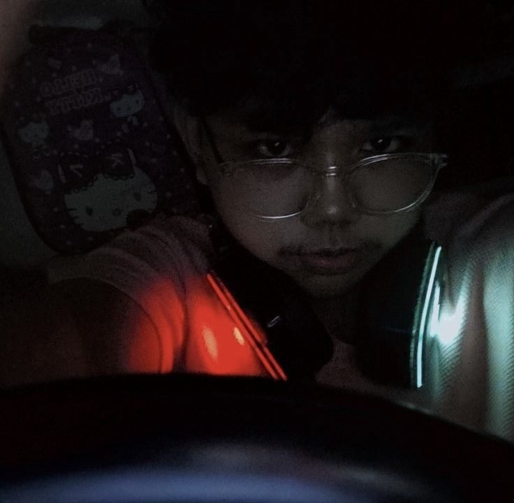

👾 WELCOME 👾 |
|  |
👤 About MeHello! My name is Justine Ezra Nisperos, a passionate car enthusiast who loves exploring everything about cars — from performance, design, and history to the thrill of motorsports. My passion lies in understanding how cars work, pushing their limits, and continuously learning about driving culture and racing. As a huge Formula 1 fan, I admire the precision, speed, and teamwork that define the sport. My greatest role model is the legendary Niki Lauda , whose resilience, determination, and comeback story inspire me not only in motorsport but also in life.In my free time, I follow motorsports, explore car communities, and enjoy learning more about different car cultures. For me, cars are not just machines but a way to express creativity, freedom, and passion. 🏎️💨 |